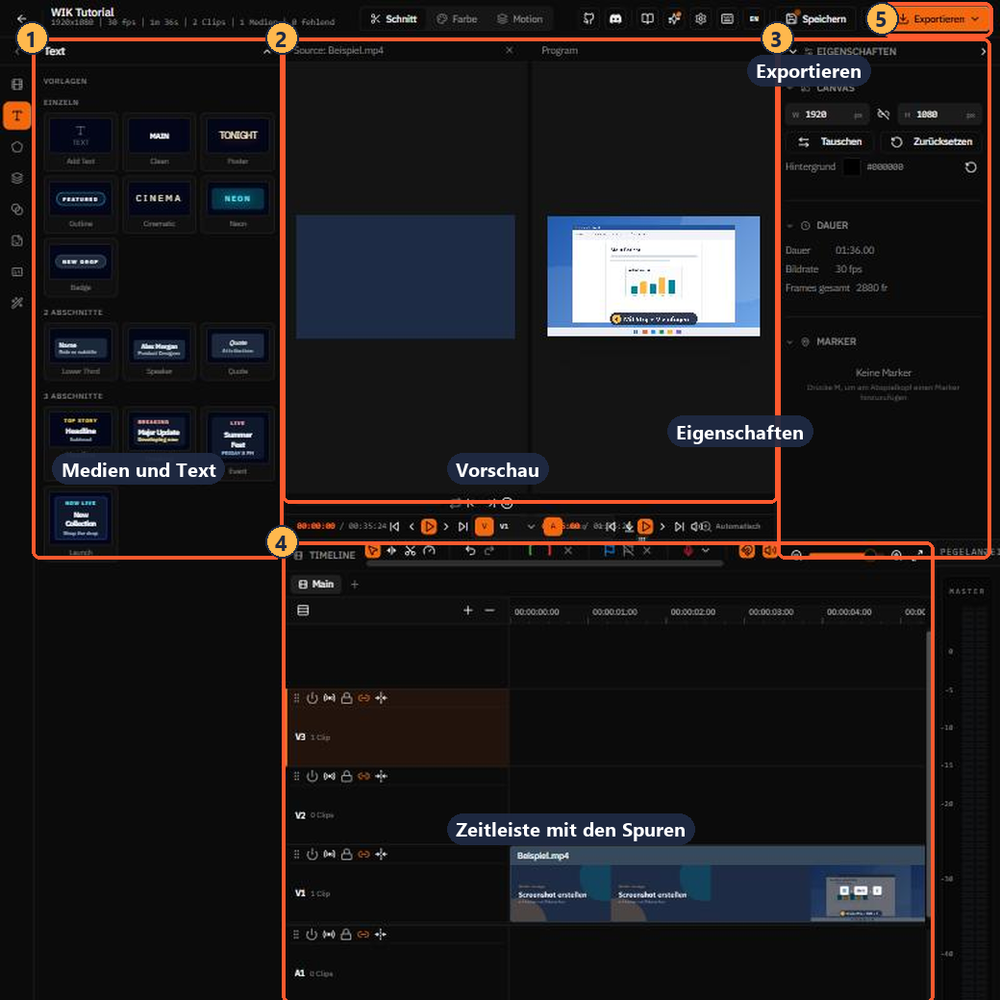
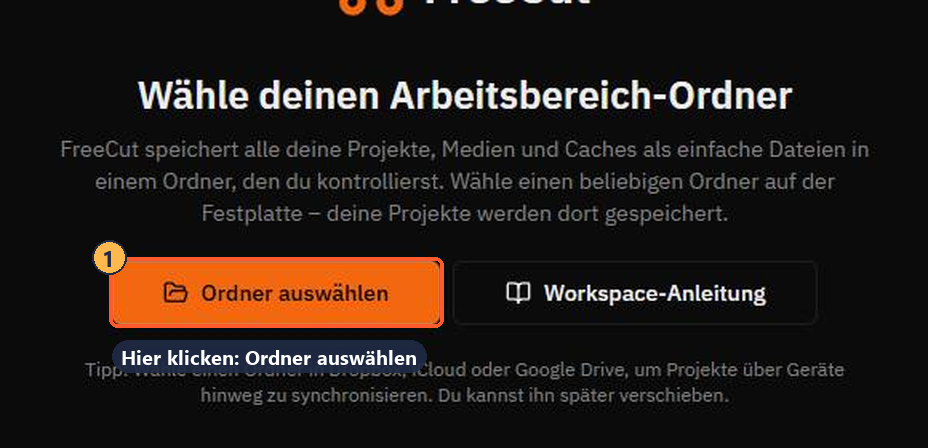
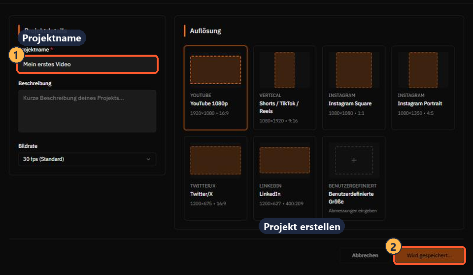
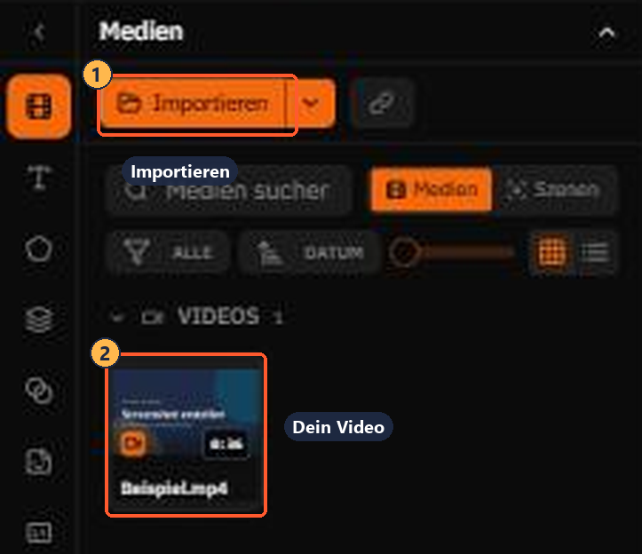
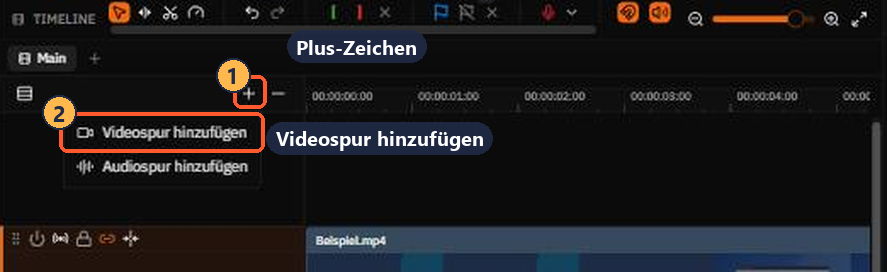
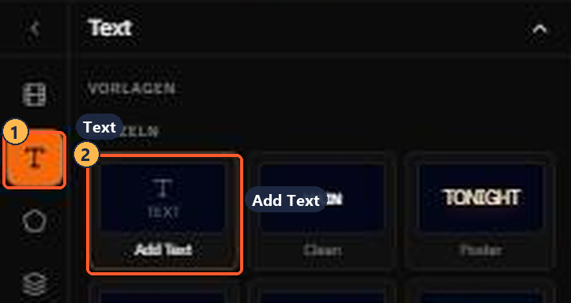
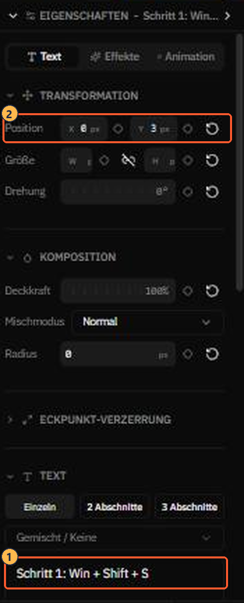
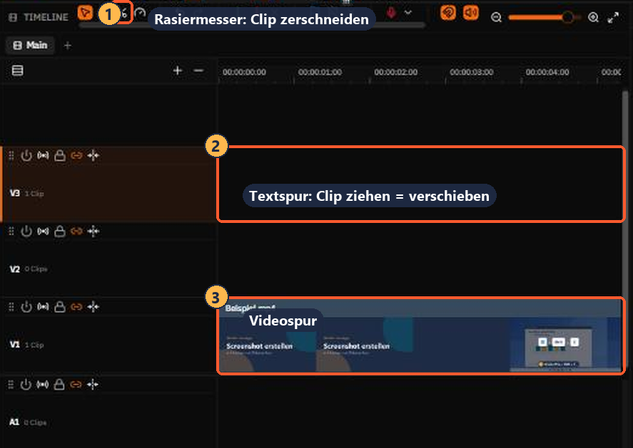
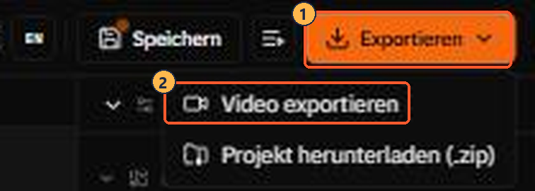
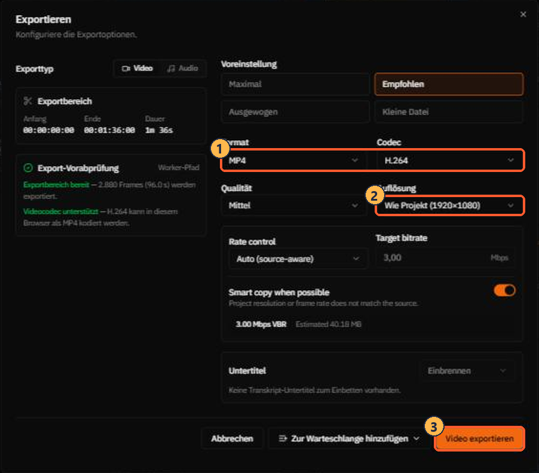

Videos schneiden mit FreeCut
| Bereich | Grundlagen |
|---|---|
| Webseite | freecut.net |
| Browser | Edge oder Chrome |
| Konto | keins nötig |
| Installation | keine |
| Status | Beta, kann Fehler haben |
| Autor | Beispiel (Lehrkraft) |
| Fassung | v1 |
FreeCut ist ein kostenloser Videoeditor, der im Browser läuft. Deine Videos bleiben auf deinem Rechner, es wird nichts hochgeladen. Mit sechs Schritten schneidest du ein Video und blendest Text ein. Das Video nimmst du vorher auf, wie im Artikel Video aufnehmen und bearbeiten beschrieben.


1 Anleitung
1. Workspace anlegen
Öffne freecut.net in Edge oder Chrome und klicke auf Loslegen. Dann klicke auf Ordner auswählen (1). FreeCut speichert dein Projekt in diesem Ordner.
- Im Fenster von Windows links Desktop wählen.
- Neuer Ordner anklicken und einen Namen eingeben, zum Beispiel
FreeCut_KÜRZEL. - Ordner anklicken und Ordner auswählen bestätigen. Fragt der Browser, ob FreeCut auf den Ordner zugreifen darf, erlaube es.


Danach legst du ein Projekt an: Gib einen Namen ein (1) und klicke auf Projekt erstellen (2).


2. Medien hochladen
Klicke links auf Importieren (1) und wähle dein Video aus. Es erscheint als Karte (2). Dein Video bleibt dabei auf deinem Rechner. Ziehe die Karte auf die Spur V1 in der Zeitleiste.


Tipp: Klappt das Ziehen nicht, mache einen Doppelklick auf die Karte und klicke unten auf Insert (Taste ,).
3. Spur hinzufügen
Klicke in der Zeitleiste auf das Plus (1) und wähle Videospur hinzufügen (2). Für Text, Bilder und Formen brauchst du eine eigene Spur über dem Video.


4. Textspur hinzufügen
Klicke links auf das T (1) und dann auf Add Text (2). FreeCut legt einen Text-Clip auf eine neue Spur.


4.1 Text ändern und verschieben
Rechts bei den Eigenschaften änderst du den Text im Textfeld (1). Mit Position (2) verschiebst du ihn: X nach links und rechts, Y nach oben und unten.


5. Text schneiden und platzieren
Ein neuer Text-Clip ist zuerst sehr lang. So bringst du ihn an die richtige Stelle:
- Wähle in der Werkzeugleiste das Rasiermesser (1) und klicke auf die Stelle im Text-Clip, an der du schneiden willst.
- Zum Zurück wähle wieder den Pfeil (Auswahlwerkzeug).
- Ziehe den Text-Clip (2) auf der Zeitleiste an die Stelle, an der der Text im Video erscheinen soll.


6. Exportieren
Klicke oben rechts auf Exportieren (1) und dann auf Video exportieren (2).


Im Fenster lässt du MP4 und H.264 (1) stehen. Die Auflösung (2) kannst du auf 1280×720 stellen, dann ist die Datei kleiner. Zum Schluss klicke auf Video exportieren (3). Benenne die Datei nach der Regel: 02_Video_v1.mp4.


2 Typische Probleme
- Es geht nicht? Nimm Edge oder Chrome. Andere Browser machen oft Probleme.
- Beta: FreeCut ist neu und kann Fehler haben. Speichere oft und lösche den Ordner auf dem Desktop nicht, darin liegt dein Projekt.
- Datenschutz: Auf dem Video dürfen keine Namen, Passwörter oder Gesichter zu sehen sein.
- Der Export dauert: Je länger das Video, desto länger. Warte, bis die Datei fertig ist.
3 Siehe auch
4 Einzelnachweise
- FreeCut – Webseite des Programms
- FreeCut auf GitHub – Open Source unter MIT-Lizenz